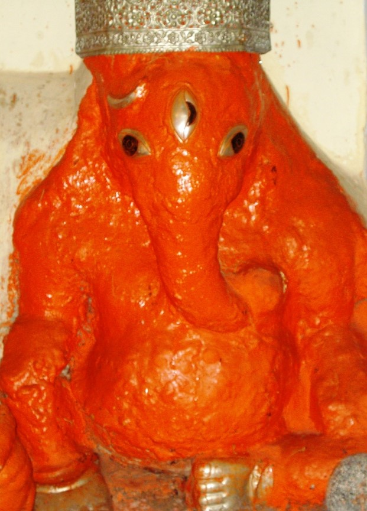

<?xml version="1.0" encoding="UTF-8"?><rss version="2.0"
	xmlns:content="http://purl.org/rss/1.0/modules/content/"
	xmlns:wfw="http://wellformedweb.org/CommentAPI/"
	xmlns:dc="http://purl.org/dc/elements/1.1/"
	xmlns:atom="http://www.w3.org/2005/Atom"
	xmlns:sy="http://purl.org/rss/1.0/modules/syndication/"
	xmlns:slash="http://purl.org/rss/1.0/modules/slash/"
	>

<channel>
	<title>Kali Priya Vinayak &#8211; Varanasi Temples</title>
	<atom:link href="index.html" rel="self" type="application/rss+xml" />
	<link>../../../../index.html</link>
	<description>Temples of Varanasi as referred to in Kashi Khand</description>
	<lastBuildDate>Thu, 19 Jun 2025 05:16:46 +0000</lastBuildDate>
	<language>en-US</language>
	<sy:updatePeriod>hourly</sy:updatePeriod>
	<sy:updateFrequency>1</sy:updateFrequency>
	<generator>https://wordpress.org/?v=4.6.29</generator>
	<item>
		<title>KALI PRIYA VINAYAK</title>
		<link>../../../../vinayak-temples/kali-priya-vinayak/index.html</link>
		<pubDate>Sat, 08 May 2010 02:44:41 +0000</pubDate>
		<dc:creator><![CDATA[admin]]></dc:creator>
				<category><![CDATA[Kali Priya Vinayak]]></category>
		<category><![CDATA[Vinayak Temples]]></category>
		<category><![CDATA[all kali]]></category>
		<category><![CDATA[amritswar temple]]></category>
		<category><![CDATA[kali temple]]></category>
		<category><![CDATA[sakshi]]></category>
		<category><![CDATA[sakshi vinayak]]></category>
		<category><![CDATA[viswanath temple]]></category>

		<guid isPermaLink="false">../../../../p=152.html</guid>
		<description><![CDATA[Kali Priya Vinayak is located at D-10/50, behind Sakshi Vinayak, Manaprakameshwar temple. Devotees can travel upto Dasaswamedh Viswanath Gully by rickshaw and walk on foot to this place. This Lord creates all sorts of problems for the enemies of sincere devotees staying in Kashi. (KALIPRIYA VINAYAK) &#160; &#8212;&#8212;&#8212;&#8212;&#8212;&#8212;&#8212;&#8212;&#8212;&#8212;&#8212;&#8212;&#8212;&#8212;&#8212;&#8212;&#8212;&#8212;&#8212;&#8212;&#8212;&#8212;&#8212;&#8212;&#8212;&#8212;&#8212;&#8212;&#8212;&#8212;&#8212;&#8212;&#8212;&#8212;-   Kashi Khand, Chapter 57, Shlok 99 [&#8230;]]]></description>
				<content:encoded><![CDATA[<p>Kali Priya Vinayak is located at D-10/50, behind Sakshi Vinayak, Manaprakameshwar temple. Devotees can travel upto Dasaswamedh Viswanath Gully by rickshaw and walk on foot to this place. This Lord creates all sorts of problems for the enemies of sincere devotees staying in Kashi.</p>
<h3 style="text-align: center;"></h3>
<h3 style="text-align: center;">(KALIPRIYA VINAYAK)</h3>
<p>&nbsp;</p>
<p><strong>&#8212;&#8212;&#8212;&#8212;&#8212;&#8212;&#8212;&#8212;&#8212;&#8212;&#8212;&#8212;&#8212;&#8212;&#8212;&#8212;&#8212;&#8212;&#8212;&#8212;&#8212;&#8212;&#8212;&#8212;&#8212;&#8212;&#8212;&#8212;&#8212;&#8212;&#8212;&#8212;&#8212;&#8212;-</strong></p>
<p><strong> </strong></p>
<p><span style="text-decoration: underline;"><strong>Kashi Khand, Chapter 57, Shlok 99</strong></span></p>
<p><strong> </strong></p>
<p><strong>सिंहतुण्डादुदग्भागे कलिप्रियविनायक:</strong></p>
<p><strong>कलहं करयेन्नित्यमन्योन्यं तैर्थिकद्दुहाम्</strong></p>
<p>&nbsp;</p>
<p><strong>To the north of Sinhatund Vinayak is Kalipriya Vinayak, who always causes problems among the haters of pilgrims. </strong></p>
<p><strong> </strong></p>
<p><strong>&#8212;&#8212;&#8212;&#8212;&#8212;&#8212;&#8212;&#8212;&#8212;&#8212;&#8212;&#8212;&#8212;&#8212;&#8212;&#8212;&#8212;&#8212;&#8212;&#8212;&#8212;&#8212;&#8212;&#8212;&#8212;&#8212;&#8212;&#8212;&#8212;&#8212;&#8212;&#8212;&#8212;&#8212;&#8212;</strong></p>
<p>&nbsp;</p>
<p><strong>Please watch our YouTube Video about Kali Priya Vinayak at following Link :</strong></p>
<p>&nbsp;</p>
<h3><a href="https://www.youtube.com/watch?v=40af4qZMnqA&amp;t=55s">https://www.youtube.com/watch?v=40af4qZMnqA&amp;t=55s</a></h3>
<h3></h3>
<h3>TYPES OF POOJA</h3>
<p>The place of worship is open practically throughout and devotees can perform pooja by themselves.</p>
]]></content:encoded>
			</item>
	</channel>
</rss>
